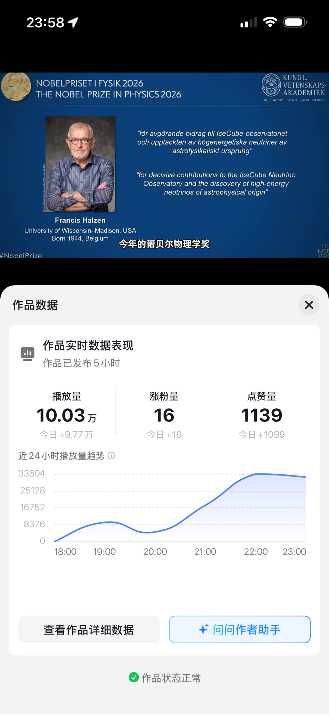
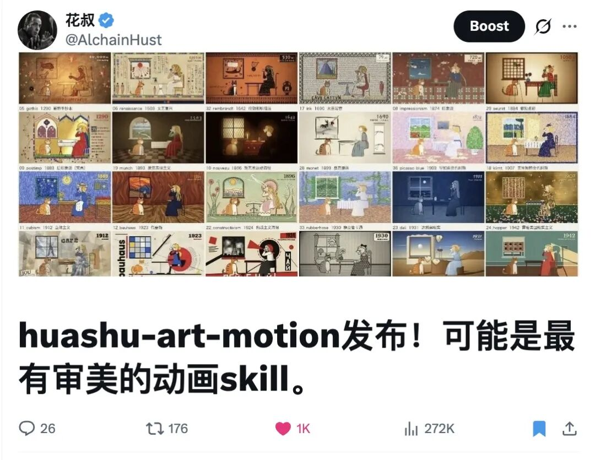
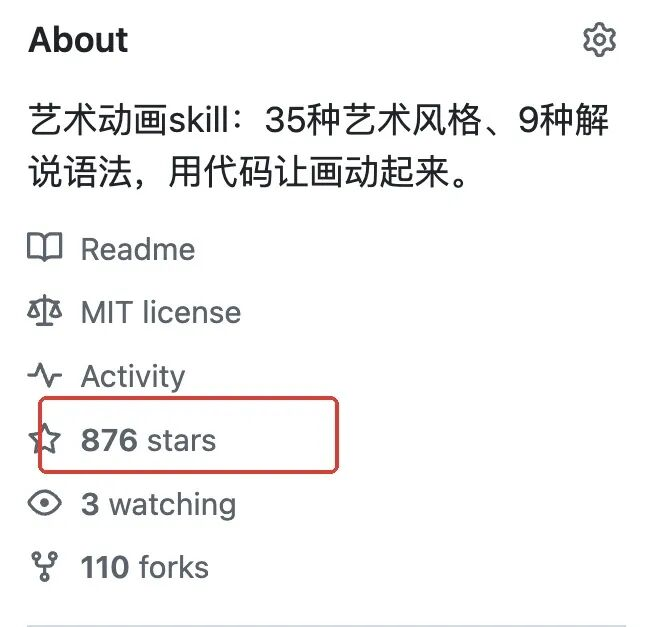
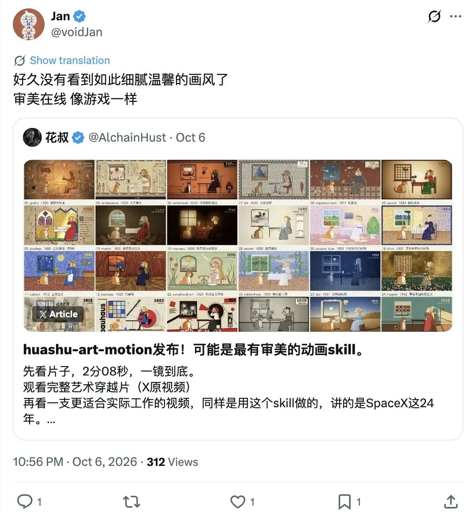
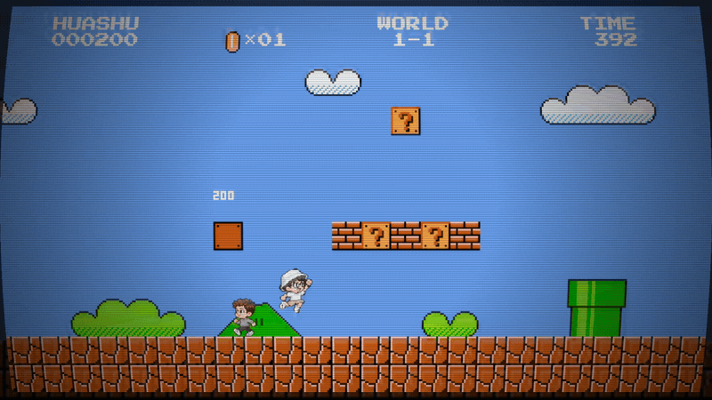
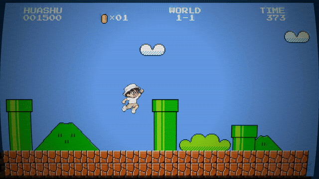
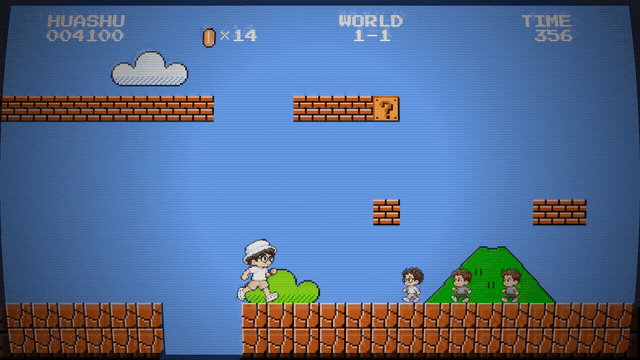

比如我自己，昨天用这个skill做的一条科普视频，发到抖音，5个小时就有了10万+播放。

我之前费劲吧啦做各种教程视频，这条为了测试skill能力做出来的短片，播放量居然远超了平时的均值。今天写这篇的时候，再看后台，已经17.4万了。
先把视频放在这里，不到一分钟，可以打开声音看一下。
讲的是今年诺贝尔物理学奖，中微子，以及科学家怎么把南极的冰变成望远镜。口播文稿的撰写、素材查找、画面的剪辑，都交给了装上huashu-art-motion的Opus5.5，声音用了我的AI复刻音色。
它里面既有真实影像和插图，也有AI写代码做的动画。一个科普视频需要的几件事，就这样串起来了。
昨天发的文章，讲的是我把做艺术动画的方法整理成了一个开源skill。今天想继续聊聊，拿着它去做内容，已经发生了什么。
昨天刚发，今天已经800多star了
如果你没看昨天那篇，快速补一下背景。
huashu-art-motion是给Claude Code这类coding agent用的一个skill。装上以后，你可以让它用代码画出不同艺术风格的场景，让角色和画面动起来；也可以给它一段口播，让它配成白板、Vox、3b1b等风格的解说动画，或者拿一支参考短片给它拆解。
昨天展示的，是我穿过23种画风的艺术短片，以及同一个SpaceX题材的不同解说版本。梵高、莫奈、古埃及、像素风都能做，长解说、课程、产品教程里的动画也能做。
前一篇在这里：
https://mp.weixin.qq.com/s/iViOvBLlH0gfxE2z_GoiCQ
我把文章同步发到了X，已经有27万多浏览、1000多赞、2300多收藏。公众号这边，2.8万多人读过，3700多人分享。

GitHub也已经突破800个star，截图的时候是876，还有110个fork。

谢谢大家帮忙传播～
不过，我觉得开头那条抖音视频更值得聊。工具被大家收藏，和拿着工具做出来的内容真的有人愿意看，毕竟是两回事。
已经有人交作业了
昨天晚上，X上的曲直就发来了一条视频。他结合自己的背景，让Claude帮忙做了一支1分50秒的内容，还特意来回复我，说自己非常满意。
还有人转发时说：「好久没有看到如此细腻温馨的画风了，审美在线，像游戏一样。」

也有人已经在问，一支片子要来回改几轮。我在X上的回复是，基本上第一版就能有90%的效果，agent还会自己迭代优化，具体继续改几版，看你对这支片子的要求。
这里的90%是我自己做这些片子的体感。你换一个复杂题材、换一种模型，当然可能不一样。我自己前面做视频的过程中，也有来回改到十来版的时候。
我觉得最适合先试的人，是已经有内容要讲、但一直卡在画面和剪辑上的人。
比如我3年前刚开始往YouTube传视频的时候，就很好奇那些whiteboard视频是怎么做的，要用哪些工具，一直没搞清楚，也懒得折腾。现在可以把自己的口播拿过来，让Claude Code先配一段试试了。
不一定要一开始就做整片。你有一段光靠说不容易讲清楚的内容，先拿那十几秒做个动画，放回原视频里，看是不是更容易理解了。
我又拿它做了些别的
昨天还把自己塞进了超级玛丽。
这是一段一帧一帧画出来的动画，音效和配乐也是Opus5.5做的。砖块、水管、旗杆、城堡都有，中途吃蘑菇变大的地方，被我换成了选开哪家AI会员。

选完Claude，继续闯关。还可以钻进水管，在金币密室里逛一圈，再回到地面。

再来一段连踩带踢的。

这种东西我会忍不住一直试，做出来挺好玩的，尤其是打开声音以后。
但要做知识内容的话，还可以看看这一版SpaceX。我用了小Lin说那种讲解员式的表达，人物跟着口播换动作，图形把失败、转折和数字画出来。昨天文章里放的是白板版和Vox版，这次换一个版本给大家看。
同一个题材，可以换不同的讲法。也可以反过来，留下自己用得顺手的画风，下一次换一个选题接着做。
我那条诺奖视频里，观众要看的是「这次获奖的研究到底做了什么」，所以画面得服务于这件事。换成艺术穿越或者超级玛丽，观众想看的又是别的东西。
一条10万+当然不代表以后每条都能爆，选题、发布时间、观众对内容的兴趣都会影响结果。但至少这一次，我已经用它做出了一支发出去有反馈的科普视频。接下来就可以继续换题材、换表达，看看哪些适合自己的账号。
带走，拿你自己的题材试试
仓库在这里，免费开源：
https://github.com/alchaincyf/huashu-art-motion
把下面这行交给你的agent，让它帮你装：
npx skills add alchaincyf/huashu-art-motion环境依赖也让它照着仓库说明装好。然后找一段你真的打算发布的口播，直接说：
用huashu-art-motion，把我这段口播做成一段白板解说动画，画面跟着口播里的关键词展开，配字幕，最后给我能直接发布的视频。想做艺术短片，就把你想试的画风、角色和动作告诉它；手上有喜欢的参考视频，也可以一起给它。如果要让自己的形象出镜，需要准备角色图，或者给agent接上生图能力。
最后补一句模型选择。
目前我自己用下来，这个skill在Opus5.5上的效果，远超我试过的其他模型，包括GPT-6 Astra。尤其是画风审美和运动自然度，这两项都差很多。
放两支我实际做过的视频，大家可以自己看一下。
这支NanoBanana2.1实测视频，是Opus5.5做的：
这支「世界全部黄金」，是GPT-6 Astra做的：
两支片子题材不同，放在这里主要是让大家看看我说的画风和运动上的差别。
也因为区分度这么高，huashu-art-motion估计会成为我后续测试新模型的主要场景之一。画面好不好看、动作自不自然，成片一放就知道了。
如果最近有国产新模型要发，欢迎各大厂商来找我试试深浅～